Research
Our group focuses on interdisciplinary artificial intelligence research that bridges computer science, bioengineering, finance and quantum information, with an emphasis on solving real industrial problems. Our core research pillars cover four interconnected directions: 1) advanced computer vision including generative models, few-shot meta-learning, computational aesthetics, 3D human reconstruction and industrial medical visual inspection; 2) computational bioinformatics leveraging deep generative networks to design functional proteins, antimicrobial peptides and optimize industrial fermentation workflows; 3) deep reinforcement learning for algorithmic asset trading and portfolio management; and 4) AI algorithms dedicated to quantum error correction. We closely integrate academic research with industry-university-research cooperation, translate our algorithms into practical industrial solutions, and regularly publish original works in top-tier CCF-listed journals and conferences across multimedia, machine learning and artificial intelligence.
News & Events
It is my great honor to work as a guest editor for the Special Issue "AI-Driven Multimodal Image and Video Processing: Advances and Applications" in Journal of Imaging (co-editors: Dr. Liting Zhou, Prof. Dr. Cathal Gurrin, and Dr. Jianhua Li). All scholars and practitioners are cordially invited to contribute high-quality manuscripts focusing on multimodal AI image & video research （before 31 October 2026）
Serving as the Asia-Pacific Advertising Chair for the 33rd International Conference on Multimedia Modeling (MMM 2027, Official link: Conference Website ), to be hosted in Siem Reap, Cambodia January 5–8, 2027, I manage all regional outreach across Asia Pacific and sincerely invite scholars and industry professionals from the region to submit regular papers, demos, special session and workshop proposals.
The researchers in our group have recently been awarded the Wiley Excellent Author Program for Q4 2025, thanks to the outstanding research contributions made by Dr. Riyad Dhuny, Dr. Aniwat Phaphuangwittayakul and Dr. Fangli Ying.
Our paper "DTIQA: a dual-path transformer framework for robust No-Reference Image Quality Assessment" got accepted by The Visual Computer (link to the paper: link) Code available: DTIQA
Dr. Fangli Ying was awarded "2025 Asia-Pacific Excellent AI Educator Award" 2025 in Fuzhou, China. link to the news
Our paper Dynamic Uncertainty-Aware Adjustment via Learnable Coefficients for 3D Reconstruction of Loose-Clothed Humans from Single Images got accepted by Pacific Graphics 2025 and selected as Computer Graphics Forum journal paper (publised online: http://doi.org/10.1111/cgf.70239), July 2025
Our paper Identity-Preserving Facial Aesthetic Enhancement via Hierarchical Prompt Learning and Pivotal Tuning got accepted by ACM Multimedia 2025 , July 2025
Our project: Joint Development of a Quantum Algorithm-Driven Industrial Enzyme Engineering & Design Scenario (by ECUST and Shanghai Weiguan Jiyuan): Selected as Shanghai’s Top 10 Quantum Computing Application Scenario (link to ECUST express news), Shanghai China 2025
We present our work of Large Models Empowering Patent Technology Evolution Analysis: An Exploratory Application of LLM-based Dynamic Topic Modeling in Dalian China, August, 2025
We present our paper Enhancing Single-View 3D Clothed Human Reconstruction with Hybrid Prior Integration in Computer Graphic International conference in Hongkong, July 2025 and Dr.Fangli Ying chair the two sessions in this conference.
We got a shanghai daily newspaper interview to show our research work (link to news), Shanghai China, June, 2025
Recent Publications
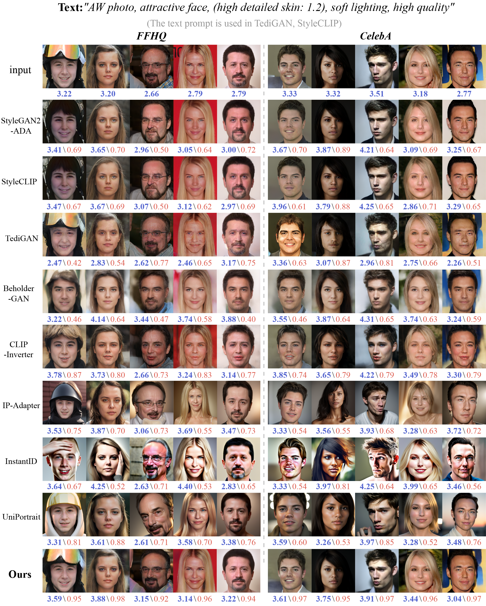
Identity-Preserving Facial Aesthetic Enhancement via Hierarchical Prompt Learning and Pivotal Tuning
Fangli Ying, Zhihong Zhang, Liting Zhou, Cathal Gurrin, Jinhai Wang
ACM Multimedia 2025
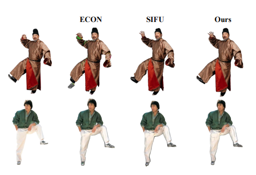
Enhancing Single-View 3D Clothed Human
Reconstruction with Hybrid Prior Integration
Fangli Ying, Yunze Li, Yadan Yang, Aniwat Phaphuangwittayakul and Riyad Dhuny
Computer graphics International 2025

Computational Design of Potentially Multifunctional Antimicrobial Peptide Candidates via a Hybrid Generative Model
Fangli Ying, Wilten Go, Zilong Li, Chaoqian Ouyang, Aniwat Phaphuangwittayakul, Riyad Dhuny
International Journal of Molecular Sciences 2025
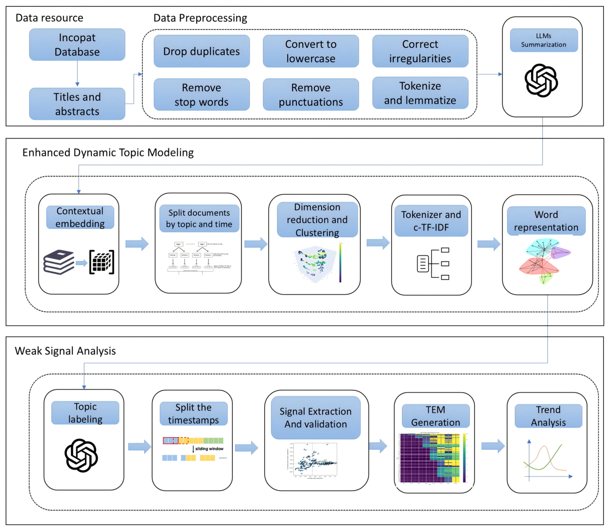
Unveiling Technological Evolution with a Patent-Based Dynamic Topic Modeling Framework: A Case Study of Advanced 6G Technologies
AJiang, Jieru, Fangli Ying, and Riyad Dhuny
Applied Sciences 15, no. 7: 3783. https://doi.org/10.3390/app15073783
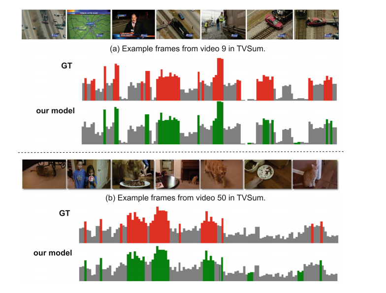
Enhancing Multimodal Video
Summarization via Temporal and Semantic Alignment
Fangli Ying, Ziyue Luo, Aniwat Phaphuangwittayakul
ICONIP 2024

Few-shot image generation based on contrastive meta-learning generative adversarial network
Aniwat Phaphuangwittayakul, Fangli Ying, Yi Guo, Liting Zhou & Nopasit Chakpitak
Visual Computer 39, 4015–4028 (2023). https://doi.org/10.1007/s00371-022-02566-3
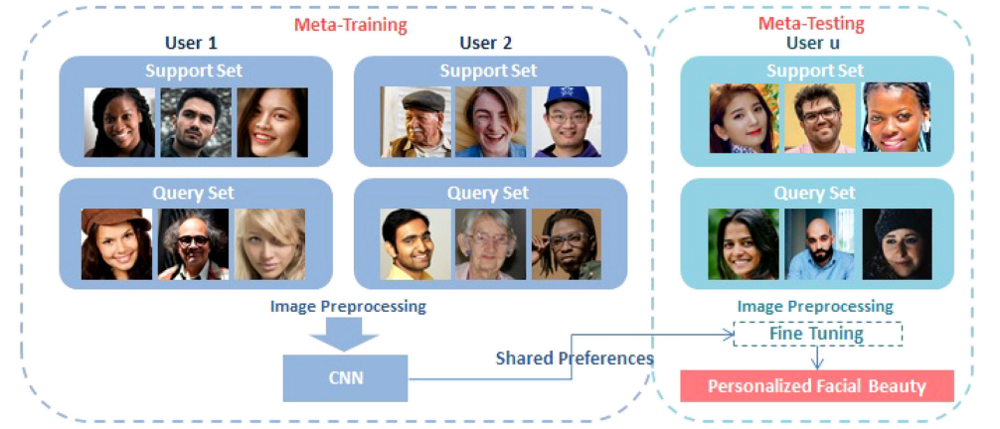
Personalized facial beauty assessment: a meta-learning approach
Irina Lebedeva, Fangli Ying, Yi Guo
Visual Computer 39, 1095–1107 (2023). https://doi.org/10.1007/s00371-021-02387-w
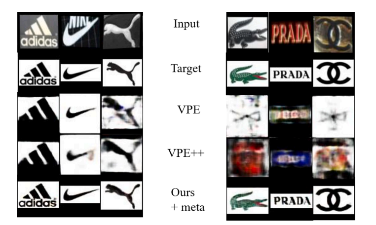
Adaptive adversarial prototyping network for few-shot prototypical translation
Aniwat Phaphuangwittayakul, Fangli Ying, Yi Guo, Surachai Santisookrat
Journal of Visual Communication and Image Representation 2023

An optimal deep learning framework for multi-type hemorrhagic lesions detection and quantification in head CT images for traumatic brain injury
Aniwat Phaphuangwittayakul, Yi Guo, Fangli Ying, Ahmad Yahya Dawod, Salita Angkurawaranon & Chaisiri Angkurawaranon
Applied Intelligence 2022
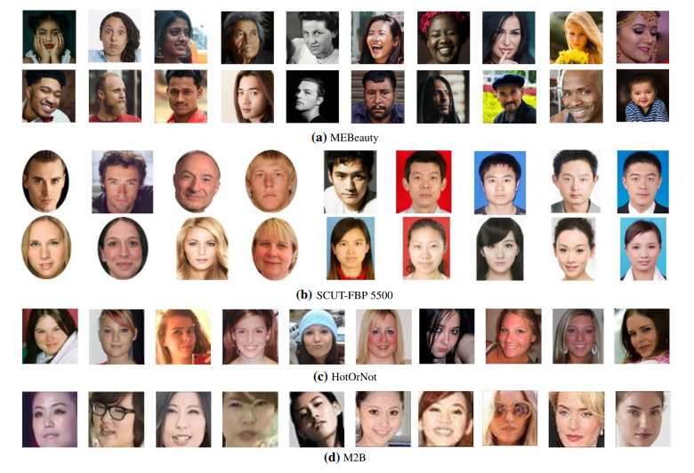
MEBeauty: a multi-ethnic facial beauty dataset in-the-wild
Irina Lebedeva, Yi Guo, Fangli Ying
Neural Computing and Applications (2022) 34:14169–14183
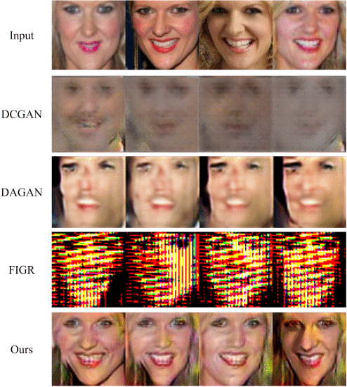
Fast Adaptive Meta-Learning for Few-Shot Image Generation
Aniwat Phaphuangwittayakul, Yi Guo, Fangli Ying
IEEE Transactions on Multimedia, vol. 24, pp. 2205-2217, 2022, doi: 10.1109/TMM.2021.3077729.
Self-Attention Recurrent Summarization Network with Reinforcement Learning for Video Summarization Task
Aniwat Phaphuangwittayakul, Yi Guo, Fangli Ying, Wentian Xu， Zheng Zheng
2021 IEEE International Conference on Multimedia and Expo (ICME)
Teaching
Online Textbooks

Introduction to Engineering
Created by Dr. Fangli Ying, for undergraduate course《Introduction to Engineering》 in ECUST, 2022,2023,2024,2025

Deep Learning
Created by Dr. Fangli Ying, 研究生课程教材《深度学习原理及其应用》 in ECUST, 2023,2024,2025

Multi-Armed Bandits
Created by Dr. Fangli Ying & Prof. Osman Yağan, for iHub Summer Camp, 2024,2025
Teaching courses
- Undergraduate courses：Introduction to Engineering，Scientific Writing ，Digital Circuit and Logic Design，JAVA Programming，Computer Vision，Inroduction to Computer Science
- Postgraduate courses： Deep Learning Principles and Applications
- iHub：Multi-Armed Bandits (with Prof. Osman Yagan from CMU)， Algorithms for Cloud Storage (with Prof. Lara Dolecek from UCLA)
- Adult Education Courses：Information Security，Artificial Intelligence ，Multimedia Technology ，Embedded Systems
Team Members
Group meetings and industrial meetings


Current Master Students

Yuanhao Li
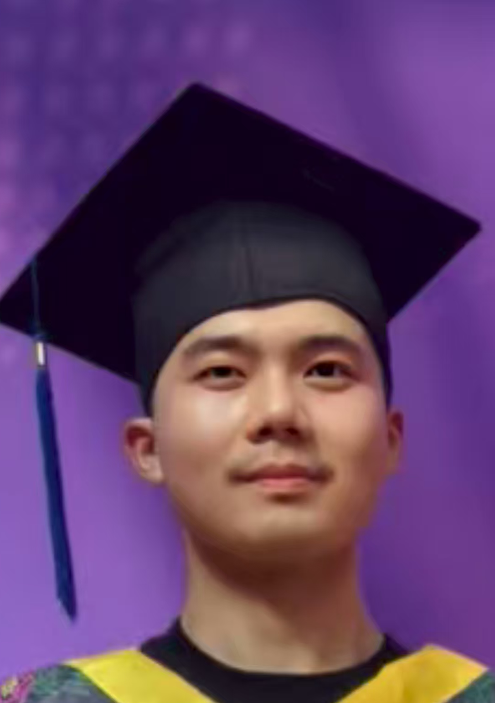
Wilten Go
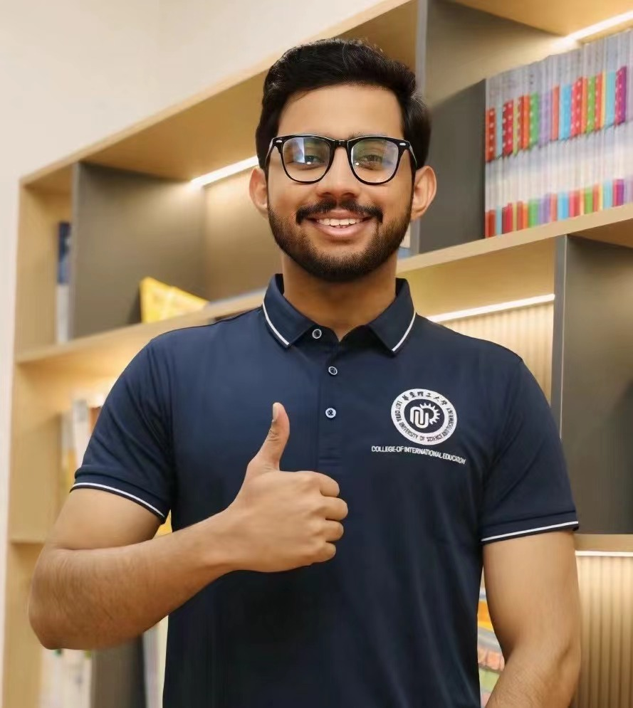
Mahzaib Khalid
Ahmed Mohammed Atef Al-Garadi
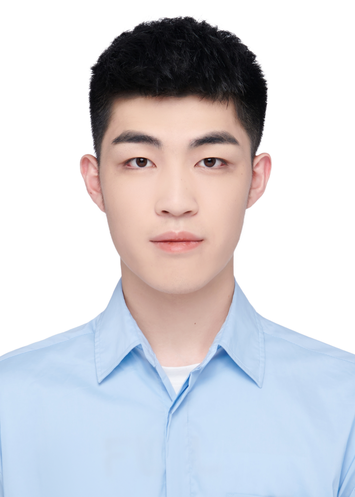
Zhihong Zhang
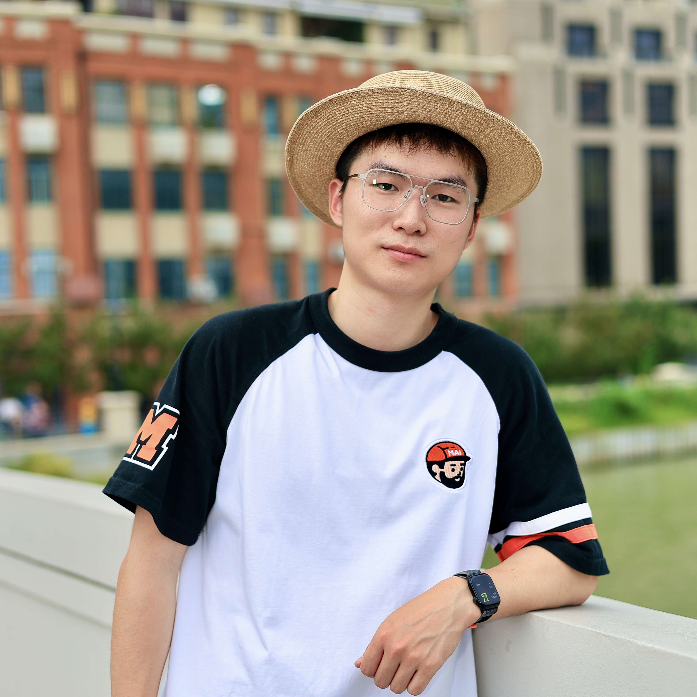
Guoqiang Yang
Zilong Li
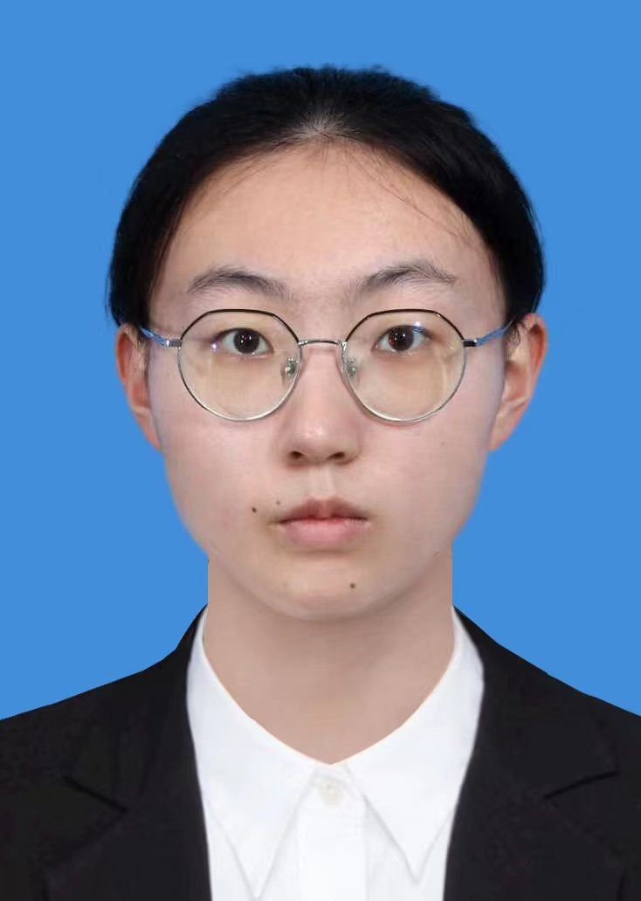
Yadan Yang
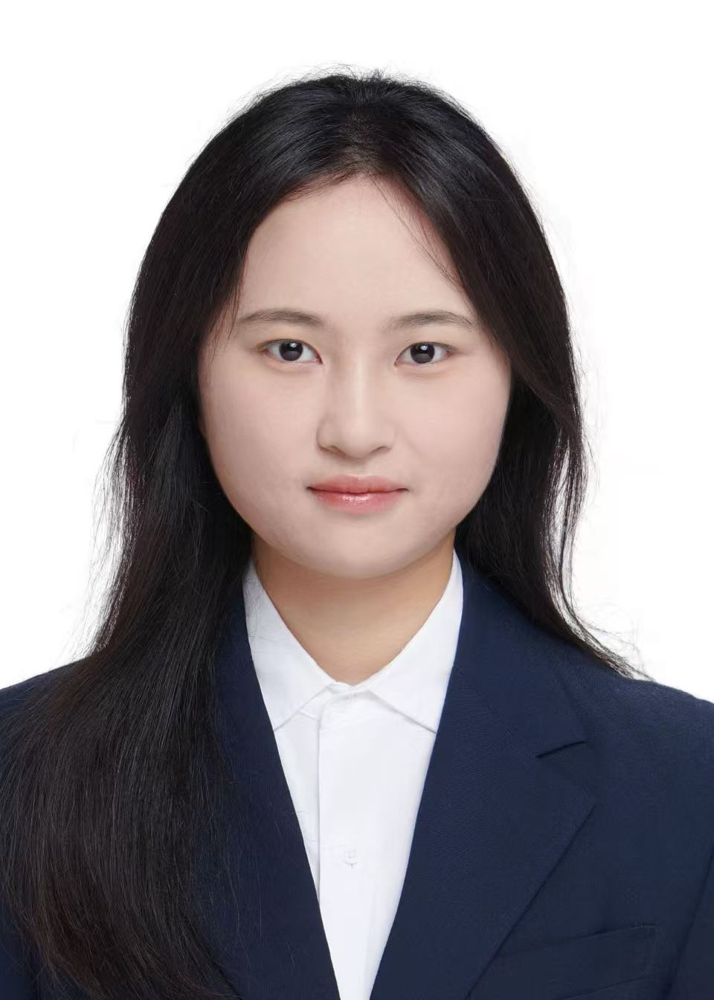
Lijuan Zhou

Yushan Li

Yuanhao Li
Yuhao Zhang
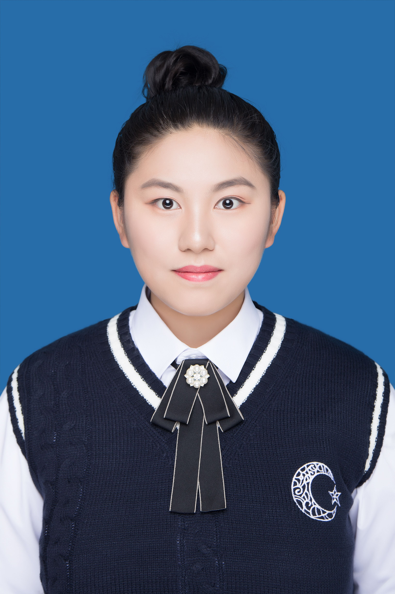
Xinyu Gao
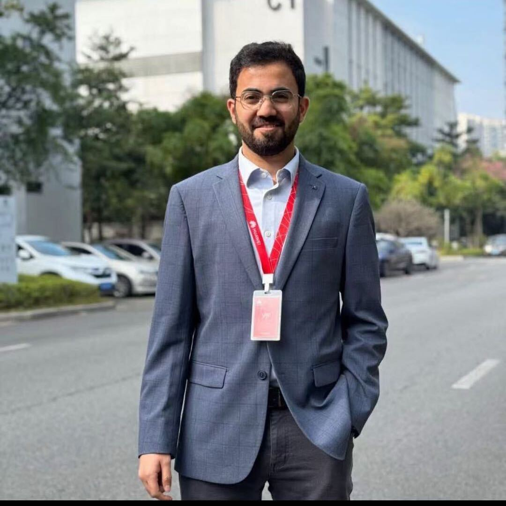
ELIAS TARIQ MOHAMMED AHMED QAID
Alumni

Dr. Riyad Dhuny
Senior Lecturer at University of Technology, Mauritius
Visiting ECUST during 2025

Dr. Aniwat Phaphuangwittayakul
Lecturer in ICDI Chiangmai University
Previous Ph.D student in ECUST
Dr. Irina Lebedeva
Senior AI engineer at Docler Holding in Budapest
Previous Ph.D student in ECUST

Ru Fan
SoftwareTesting engineer in HuaWei
Previous Master student in ECUST

Ziyue Luo
Software Developer in MeiTuan
Previous Master student in ECUST
Funding Positions and Recruitments
We have funding positions for outstanding international scholars to visit our research group for short or long term, please contact me via email.
We are looking for highly motivated PhD students and postdoctoral researchers to join our research group. If you are interested in applying for funding positions, please contact me via email.
We are currently recruiting Master students in the following areas: Computer Vision, LLM Agent, Reinforcment Learning for Financial Trading, AI for Protein or Drug Design. If you are interested in joining our group, please feel free to contact me via email.
We are also looking for talented undergraduate students to join our research group. If you are interested in joining our group, please feel free to contact me via email.